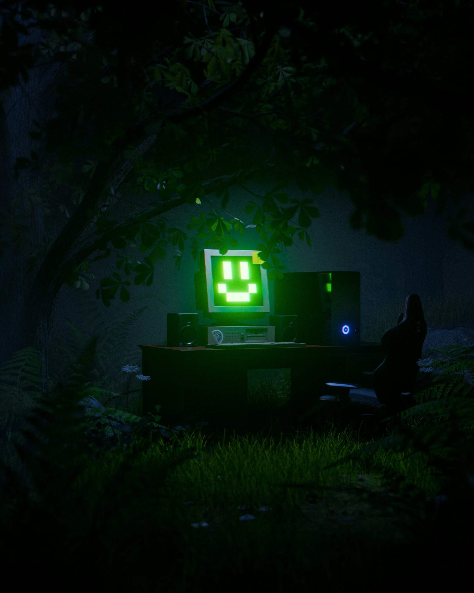

Getting Started with Minecraft
October 7, 2026 by Amoya Hamilton

Minecraft is one of the most popular sandbox games in the
world, allowing players to build and explore virtually anything
they can imagine. The game places you in a procedurally generated
world made entirely of blocks, where you gather resources, craft
tools, and build structures to survive and thrive.
Whether you prefer survival mode, where you must gather food
and fight off monsters, or creative mode, where you have unlimited
resources to build freely, Minecraft offers something for everyone.
Its simple yet deep mechanics have made it a favourite among
players of all ages around the world since its release in 2011.
Building Your First House in Minecraft
September 27, 2026 by Amoya Hamilton

Building your first house in Minecraft is one of the most
exciting milestones for any new player. Your first shelter does
not need to be elaborate — even a simple dirt or wooden structure
will protect you from the dangers that come out at night. The
key is to have four walls, a roof, a door and some torches to
keep the darkness away.
As you gather more materials like stone, wood planks and
glass, you can expand and improve your home. Many players start
small and gradually build elaborate mansions or even entire
villages. The beauty of Minecraft is that there are no rules —
your imagination is truly the only limit to what you can create.